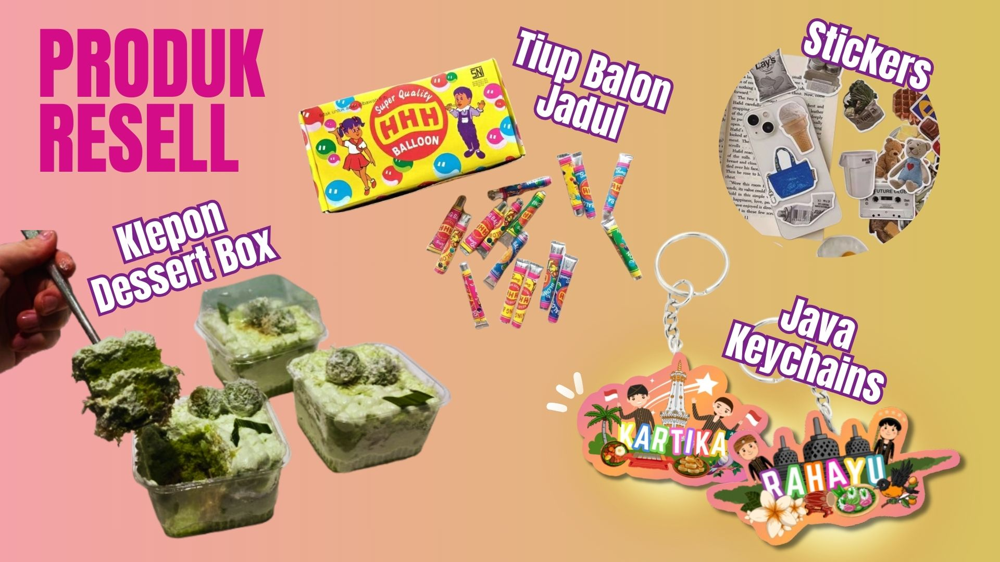

Laporan Pelaksanaan
Proses Pembuatan
Setelah tahap perencanaan toko sudah matang, kami siap untuk mempersiapkan proses pembuatan. Beberapa produk kami harus resell dari vendor, lalu ada beberapa produk yang kita juga harus memproduksi secara manual. Produk yang kami menjual kembali dari vendor adalah Java Keychains. Pertama-tama, kami harus membuat design dan bentuk dari kecyhain tersebut, setelah itu kami akan mengirimkan design tersebut untuk dibuat menjadi keychain oleh vendor. Selanjutnya, ada juga produk yang tinggal kita beli dari vendor, yaitu tiup balon jadul, stickers, dan klepon dessert box. Produk-produk tersebut kami harus membeli setidaknya h-3 minggu sebelum hari H bazaar. Agar pada h-1 minggu, produk-produk semua sudah datang dan siap untuk dikemas. Maka dari itu, selama proses pembelian produk dari vendor, kami membutuhkan bantuan sesama. Kami saling membagi tugas, antara yang membeli produk dari vendor dan yang membeli bahan-bahan untuk produk yang kita harus buat dari nol.
Kami perlu membuat beberapa produk secara manual, yaitu es kul-kul, katsu sandwich, oatmeal cookies, drink fizz, dan batik pouch. Dari kelima produk tersebut, oatmeal cookies dan batik pouch sudah dipersiapkan sebelum hari H bazar. Setelah membeli bahan-bahan pokok, beberapa produk harus dimasak di dapur sekolah pada pagi hari sebelum bazar dimulai. Es kul-kul telah dipersiapkan dan ditusuk oleh Emilie di rumah, sehingga di sekolah tinggal dicelupkan ke dalam lelehan coklat. Katsu sandwich perlu digoreng dan disusun di sekolah agar tetap krispi dan hangat saat disajikan kepada pembeli. Untuk drink fizz, jelly sudah dibuat oleh Bella di rumah, dan di sekolah tinggal dicampurkan dengan es, soda, lemon, dan biji selasih.
Proses Pengemasan
Setelah semua produk telah jadi, kita masih harus ke tahap pengemasan, dimana membutuhkan kerja sama, kekompakan, dan keadilan pembagian tugas. Produk yang kami resell dari vendor, jika sudah datang, kami segera masukkan ke packagingnya. Seperti produk tiup balon jadul, yang kami telah beli dari vendor berjumlah 100 pcs, agar lebih murah, kemudian kami packaging per 5 pcs. Kami memerlukan kekompakan dan ketelitian anggota selama memasukkan barang-barang di packaging. Agar packaging terlihat rapi dan menarik bagi para pembeli. Sama hal nya dengan produk yang kami buat dari nol, terutama produk makanan dan minuman kami harus packaging sesuai dengan ukuran dan jenis makanannya. Di packaging produk, kami juga tempelkan stiker toko agar terlihat lebih menarik.